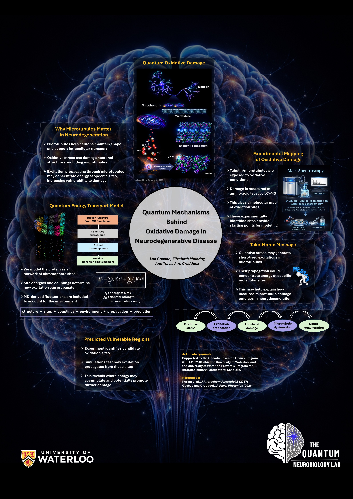
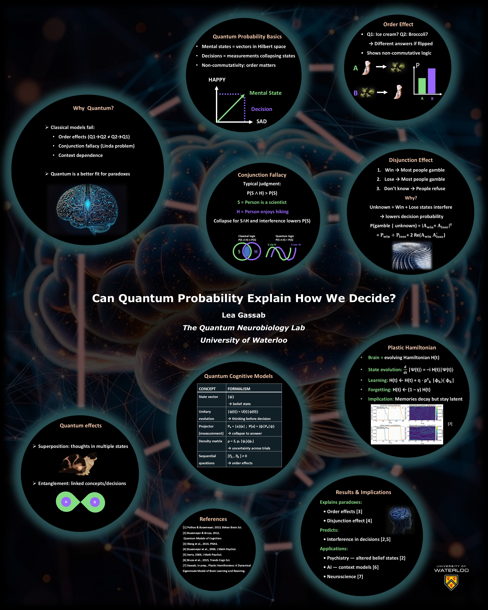

Lea Gassab
I am an interdisciplinary physicist and postdoctoral researcher at the University of Waterloo. My work brings together open quantum systems, quantum information, molecular biophysics, computational modeling, and experimentally informed approaches to study microtubules, light matter interactions, and quantum biological mechanisms relevant to living systems and neurodegeneration.
Research profile
My research focuses on quantum biological questions that can be approached with rigorous physical modeling and meaningful biological interpretation. I am particularly interested in microtubules, excitation and information dynamics, oxidative processes, neurodegeneration, light matter interactions, and open quantum system methods that connect theory to experimentally testable problems.
Education and appointments
Provost Postdoctoral Scholar, University of Waterloo
Research on quantum biological mechanisms in microtubules and neurodegeneration
Postdoctoral Scholar, University of Waterloo
Quantum effects in microtubules using molecular dynamics, quantum simulations, Python, and HPC workflows
PhD in Physics, Koç University
Thesis: Quantum Metrology for Biological Systems
MSc in Physics, Theoretical track, École Normale Supérieure de Lyon
BSc in Physics, École Normale Supérieure de Lyon
Publications
Full list of journal articles, conference proceedings, and manuscripts in progress from the materials you provided.
Journal articles
Conference proceedings
Presentations
Complete presentation list from your CV and CCV materials.
Posters and visual examples
A cleaner thumbnail layout. Click any image to open the full poster file.

Quantum Mechanisms Behind Oxidative Damage in Neurodegenerative Disease
Recent conference poster in quantum biology and neurodegeneration.

BrainModes poster
Interdisciplinary research communication example.

Protection of Quantum Coherence by Optimizing Network Geometry
Poster on coherence preservation and network geometry.

Quantum vision poster
Poster connected to quantum vision and psychophysical questions.